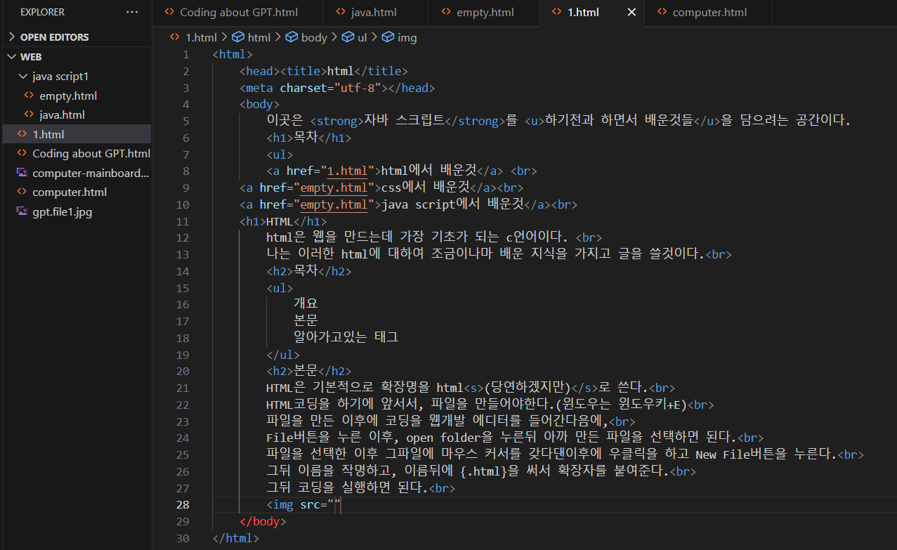

html에서 배운것
css에서 배운것
java script에서 배운것
HTML
html은 웹을 만드는데 가장 기초가 되는 c언어이다.
나는 이러한 html에 대하여 조금이나마 배운 지식을 가지고 글을 쓸것이다.
[목차2]
[본문]
HTML은 기본적으로 확장명을 html(당연하겠지만)로 쓴다.
HTML코딩을 하기에 앞서서, 파일을 만들어야한다.(윈도우는 윈도우키+E)
파일을 만든 이후에 코딩을 웹개발 에디터를 들어간다음에,
File버튼을 누른 이후, open folder을 누른뒤 아까 만든 파일을 선택하면 된다.
파일을 선택한 이후 그파일에 마우스 커서를 갖다댄이후에 우클릭을 하고 New File버튼을 누른다.
그뒤 이름을 작명하고, 이름뒤에 {.html}을 써서 확장자를 붙여준다.
그뒤 코딩을 실행하면 된다.

[알아가고있는 태그]
h1
h2
h3
h4
h5
h6
위와같이 h-는 크기를 조절할 수 있는 태그이다.
strong
u
S
다음과 같이 strong, u, s는 줄을 치거나 강조를 하는 태그이다.
html명령어는 head태그와 body태그로 구성이 되어있는데(예시 사진 참조)
head부분에는 title과 meta charset태그를 사용할 수 있다.
우선, title태그는 head에 왔을때 처럼 표시할 수 있게 해주며,
meta charset태그는 utf-8을 적용하여 한국어를 코딩으로 작성한뒤 웹페이지에서 우리가 알아볼수있게 해준다.
br태그는 줄바꿈을 할때 유용하며, p태그는 단락을 표시할때 유용하다.
ul태그는 순서를 매기지 않고 정렬할때 유용하며, ol태그는 자동으로 순서를 매겨 정렬할때 사용한다.
li태그는 ul태그나 ol태그안에 써야하는데, li태그를 쓰지않으면 순서가 나타나지않는다.
따라서 li태그는 자신이 순서를 써야하는 곳을 표시해준다.{예시:(li)블라블라블라(/li)}
ex- ul:
ex- ol:
- 하나.
- 둘.
- 셋.
이제 ol과 ul의 차이점을 알겠는가?
마지막으로 html의 속성 문법과 관련된 태그들을 알아보겠다.
먼저, img태그이다. img태그는 사진을 첨부할 수 있는 태그로, 형태는 (img src:"불러일으킬 사진" width:"-%")이다.
width는 크기를 결정하고, img src에 들어갈 사진은 다음과 같이 적용한다.
- 먼저, 사진을 내가 처음 만들고, 코딩 에디터로 불러일으킨 폴더에 저장한다.
- 폴더에 저장한 사진을 f2를 눌러 사진 이름을 마음대로 변경한다.
- 그변경한 사진의 이름과 확장자 명을 모두 img src:"{여기}" {여기}에 적어 마무리한다.
이렇게 하면 img의 기본적 형태는 마무리된다.
속성 문법의 마지막으론 href태그에 대해 알아보겠다.
href는 링크를 첨부할 수 있도록 하는 태그이다.
기본적인 형태는 이렇다:(a href:"{링크}") '사용자가 볼수있고, 눌러서 링크를 들어가게 하는 텍스트' (/a)
이를 잘 활용하면 목차를 만들수도 있다.
자 이렇게 내가 현재 알고 있는 html태그에 대해 알아보았다.
만약 html의 태그가 더 알고 싶다면 이사이트를 방문해보아라. 여러 좋은 태그를 더 만날 수 있을 것이다.
이제 글을 마치겠다.
목차로 돌아가기